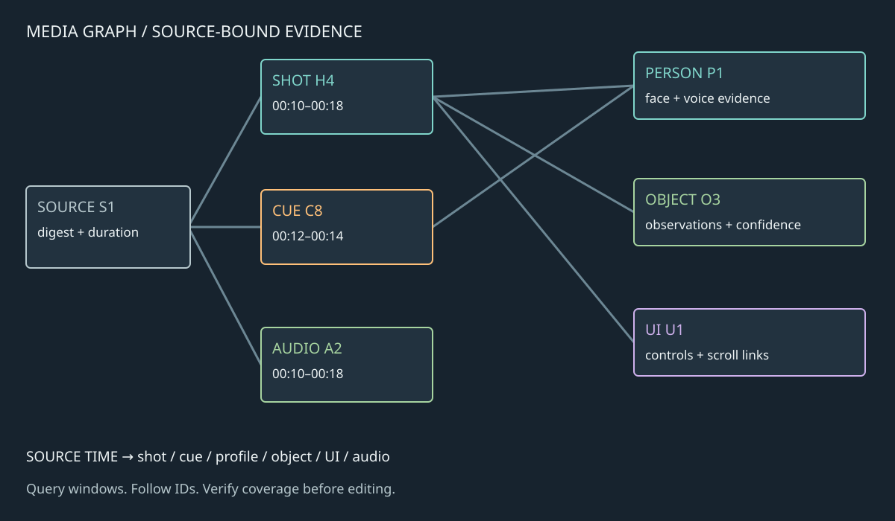

Агенты и граф
Агенты, MCP и граф медиа


Сначала найти инструмент
Конфигурация локального MCP и установка навыков описаны в docs/AGENT-SETUP.md и skills/README.md в репозитории. Для нативной студии используй команду своей платформы из инструкции.
Каталог media_catalog ищет актуальные инструменты. Ресурс ag-media-studio://catalog показывает те же регистрации. После обновления студии переподключи MCP.
media_catalog(category="ui", query="scroll", include_schema=true)
media_catalog(category="graph", include_schema=true)Работа по временным окнам
- Получи список/overview доступных графов и проверь источник, SHA, длительность и покрытие.
- Найди слова или тип узла через
media_graph_search; затем запроси ограниченное окноmedia_graph_timeline. - Через
media_graph_nodeуточни входящие/исходящие ссылки. Не считай отсутствие узла доказательством отсутствия объекта в исходнике. - Используй
media_graph_frameдля исходного кадра с техническим слоем иmedia_graph_audioдля нужного звукового фрагмента. - Для зарегистрированных интерфейсов фильтруй
kind=ui; локальные скриншоты анализируютscreen_analyzeиscreen_scroll. Черновой детектор не доказывает роль элемента.
Браузер и внешний агент
WebMCP использует текущую страницу и её состояния. Внешний stdio MCP работает с локальными файлами и сервером по существующим контрактам. Наличие URI в wiki не предоставляет доступ или разрешение на удаление, публикацию и отправку данных.
Что передавать следующему агенту
- ID графа/снимка и источник материала, для дорожки — её связь с исходником.
- Интервал времени, интересующий тип узла и нужные поля.
- Наблюдения, уверенность и основания связи отдельно от выводов агента.
- Какие слои ещё догружаются, пропущены или требуют проверки.